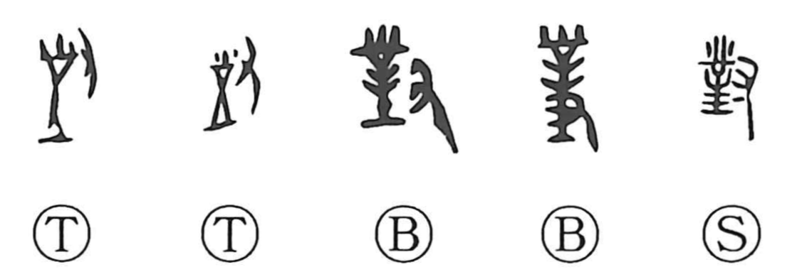

Explanation
対 shortens 對, whose early components are a working implement, 土, earth, and 寸, a hand. The tool strikes and compacts the ground. The formation belongs to rammed-earth construction, in which earth is packed between boards and beaten firm layer by layer.
Workers face one another while performing this task. Their opposed positions provide the likely connection with ‘facing,’ ‘counterpart,’ and ‘answering.’ Bronze dedications often use 對揚 for responding gratefully to a favour or royal gift. An answering act is directed toward what has been received.
The character consequently applies to meeting or facing someone, matching two things, a pair, and making a response. The full construction is easiest to see in 對; the abbreviated modern strokes preserve the word without displaying every older element.